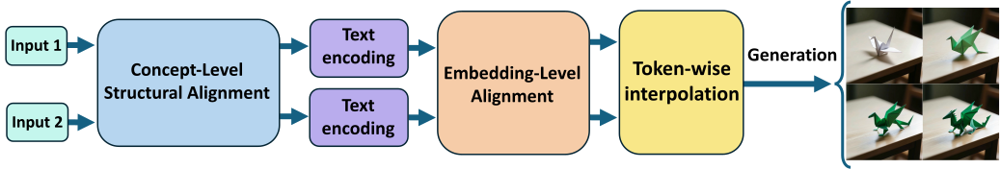
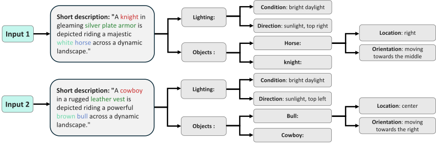
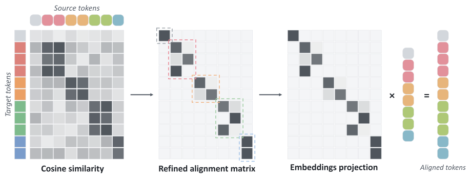

TL;DR: Modern text-to-image models are controlled through sequences of token embeddings — representations of the semantics we want to manipulate. While these spaces already encode rich, continuous semantic structure, corresponding concepts are not necessarily aligned across prompts. Token-to-Token establishes this correspondence, making simple interpolation a meaningful semantic operation.
Modern text-to-image models represent semantic content through sequences of token embeddings. However, these representations are not unique: the same semantics can be expressed through different token sequences, making direct semantic operations on them unreliable. We argue that the key limitation is not the absence of semantic structure, but misalignment between representations. To address this, we introduce Token-to-Token, a pair-specific framework that establishes semantic correspondence between two representations. Our method first aligns their semantic structure and then aligns their token embeddings, producing compatible representations of corresponding concepts. Once aligned, simple linear interpolation becomes a meaningful semantic operation, producing coherent semantic trajectories. Our results suggest that text embedding spaces already encode a continuous semantic structure that can be accessed by organizing existing representations, rather than modifying the generative model.

Token-to-Token establishes pair-specific semantic correspondence between two representations. We first align their semantic structure at the textual level, then align their token embeddings to obtain compatible representations of corresponding concepts. Once aligned, simple token-wise interpolation produces intermediate semantic representations that condition the generative model.

At the textual level, we jointly structure the two descriptions under a shared semantic schema. Corresponding concepts are placed in consistent fields and expressed with aligned phrasing, establishing coarse semantic correspondence before tokenization.

At the embedding level, we align tokens representing corresponding concepts across the two descriptions. Guided by Stage 1 and semantic similarity, we construct a projection matrix that maps one representation into the token layout of the other, establishing token-wise correspondence and making interpolation meaningful.
@article{huberman2026token,
title={Token-to-Token Alignment of Text Embeddings for Semantic Blending},
author={Huberman, Saar and Mokady, Ron and Patashnik, Or and Cohen-Or, Daniel},
journal={arXiv preprint arXiv:2606.24021},
year={2026}
}